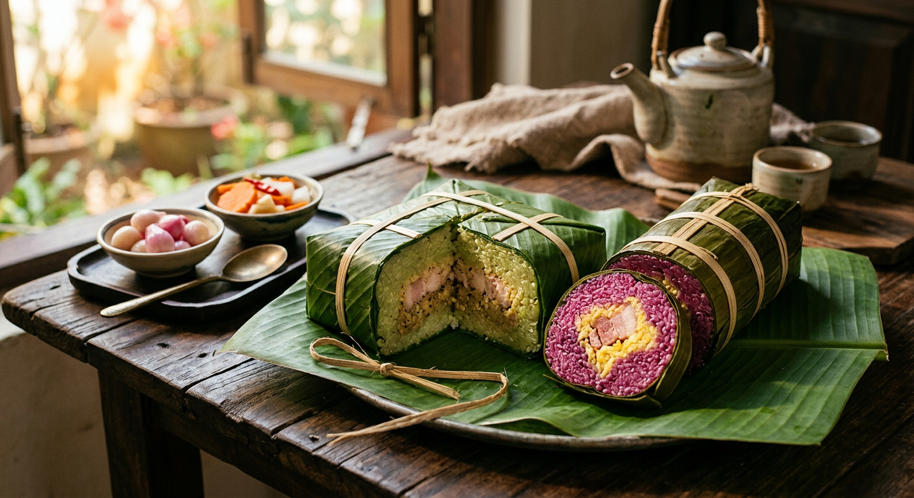
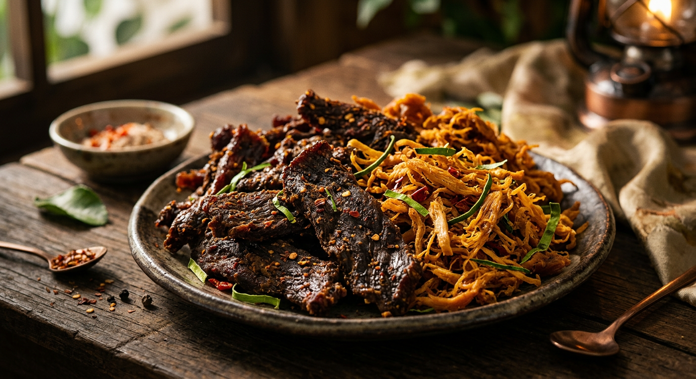

Tinh Hoa Ẩm Thực Ngày Tết
Mỗi món ăn mang lên mâm cỗ Tết là một câu chuyện thấm đẫm ân tình quê hương.

Nếp Nương Gói Trọn Ân Tình Đất Trời
"Gói bánh chưng xanh, buộc lạt ân tình
Nếp cẩm điểm tô, sắc xuân tươi rạng..."
Tại Bếp Nhà Ngọ, từng đòn Bánh Tét Lá Cẩm hay chiếc Bánh Chưng xanh đều được nâng niu tỉ mỉ từ khâu chọn nếp cái hoa vàng hạt đều tăm tắp, đến thịt mỡ và đậu xanh bùi béo. Sự hòa quyện giữa vị mặn của thịt, vị bùi của đậu và hương thơm lừng của nếp mới không đơn thuần là một món ăn, mà là bản giao hưởng gọi Tết về, gói ghém trọn vẹn lời chúc năm mới an khang, sum vầy và thịnh vượng.
Giò Lụa Chả Quế Thượng Hạng
"Mâm cao cỗ đầy không gì sánh bằng tấm lòng.
Giò chả thơm lừng, đậm tình nồng nàn góc bếp."
Giò Chả là phần tinh túy nhất trong mâm cỗ truyền thống. Để miếng giò lụa được trắng dòn sần sật, thịt phải là phần mông nạc vừa mới mổ, vẫn còn hơi ấm, đem giã đều tay ngay tức khắc.
Miếng chả quế thì lại đòi hỏi sự khéo léo để nướng cho lớp vỏ ngoài ánh vàng như mật ong, cắn vào mềm ẩm, đượm quế tinh khiết. Chúng tôi gìn giữ công thức gia truyền trăm năm, hoàn toàn không chất bảo quản, chỉ gói ghém hương vị mộc mạc và chân thành nhất để trao đến vị giác của bạn.


Ngọt Ngào Dư Vị Khay Mứt Tết
"Trà đắng đố kị mứt thơm ngọt
Như đời nhân thế nếm đắng cay..."
Khay mứt Tết không chỉ là niềm vui trẻ nhỏ mà còn là những lời rôm rả mở đầu câu chuyện đầu năm của người lớn. Mứt dừa trắng muốt ngọt bùi, mứt gừng vàng ánh cay nồng ấm bụng, mứt sen trần thanh nhã như tà áo cô gái Hà Thành...
Chúng tôi sên tay từng mẻ mứt mộc bằng đường phèn, không nhuộm màu giả, để vị ngọt tự nhiên bừng lên dịu êm. Cùng một ấm chà xanh nóng hổi, ngày Xuân dường như chậm lại, để ta thưởng thực vị thanh tao và đón những bình yên chậm rãi.
Dư Vị Lai Rai Nồng Đượm
"Khách đến dâng chén sương lam
Kèm thêm chút mồi thắm đượm thâm giao"
Ngày Xuân sao có thể thiếu những chầu hàn huyên rôm rả, vài chén rượu nâng cạn cùng nhâm nhi miếng Khô Bò, Khô Gà đậm vị. Thay vì ngợp trong cỗ ngọt béo ngậy, chính vị mặn mặn, cay cay kích thích vị giác trở thành điểm nhấn thăng hoa cho bàn tiệc.
Từng thớ thịt tẩm ướp tiêu hạt, mắc khén rừng và sấy củi gai làm bùng nổ hương sắc. Những cái chạm ly len lỏi giữa mùi thơm thớ khô, là dư vị khó tả của tình bằng hữu, chốn đoàn viên thiêng liêng rộn rã cười nói.
